Anime Scenes
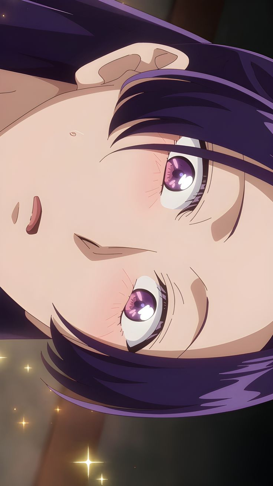
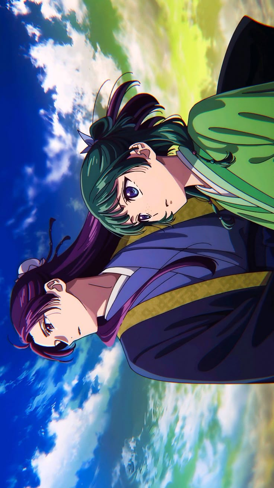
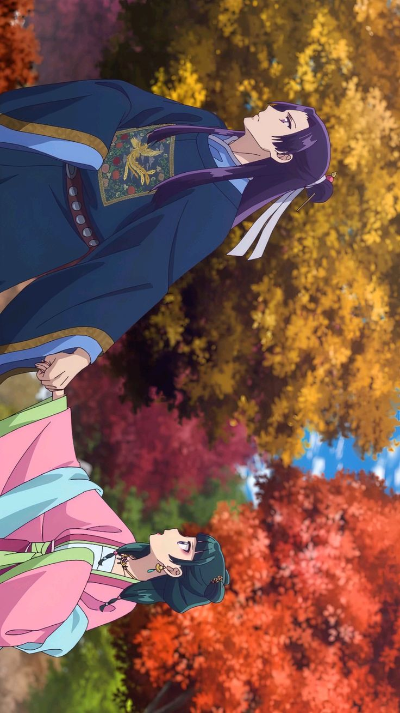
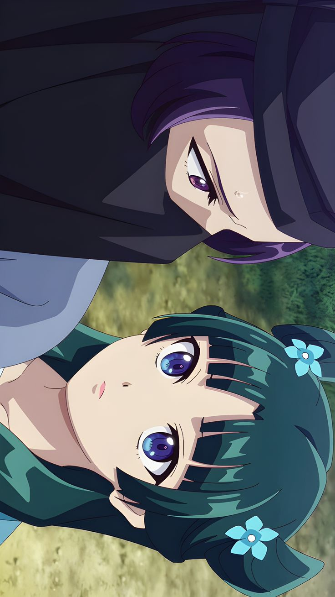
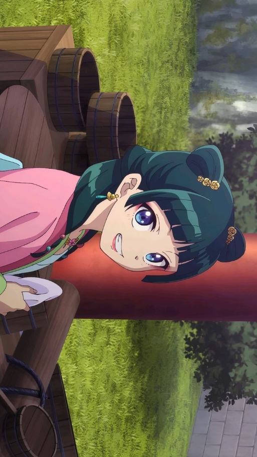
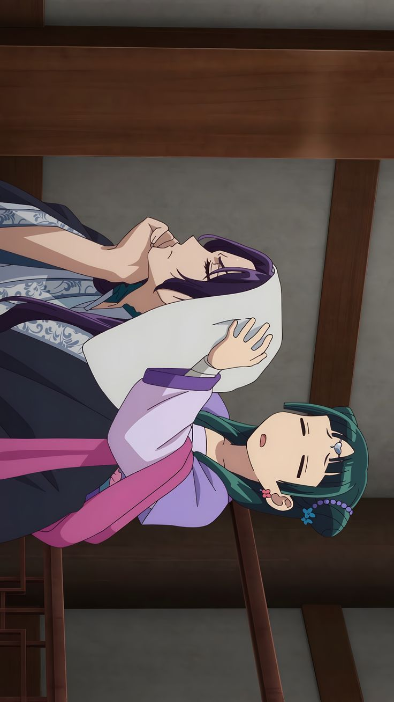
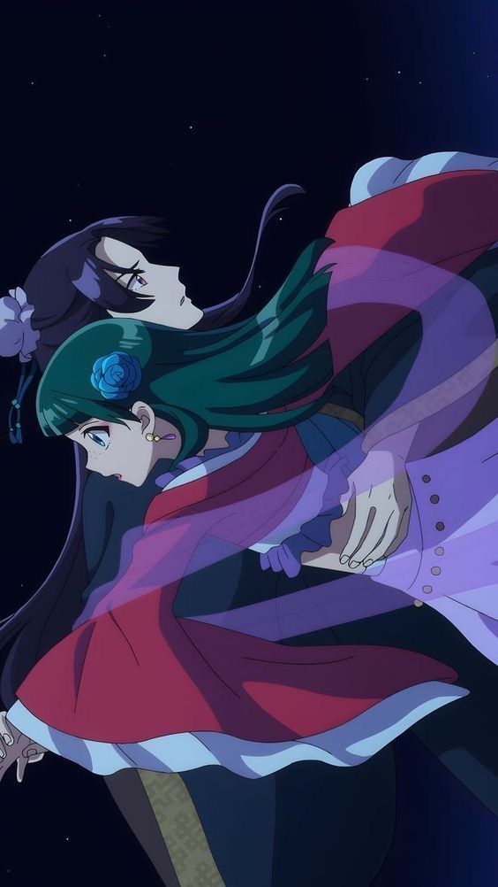
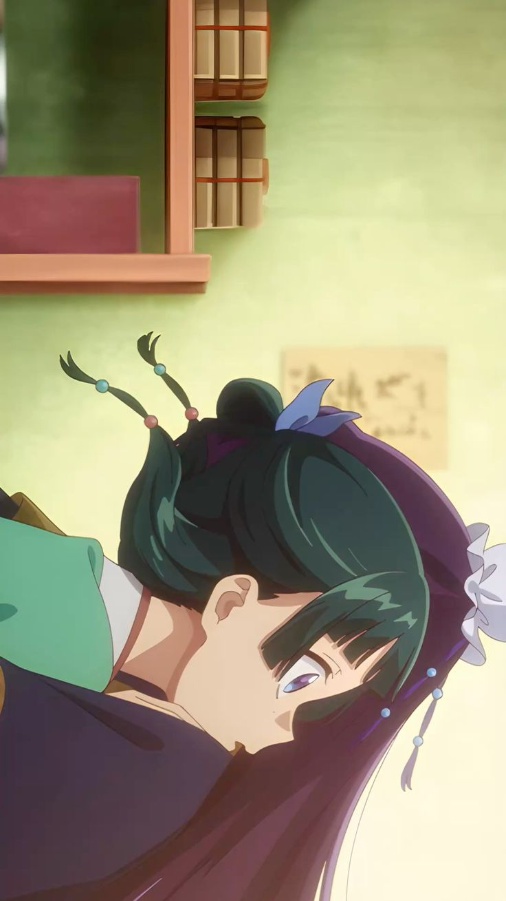
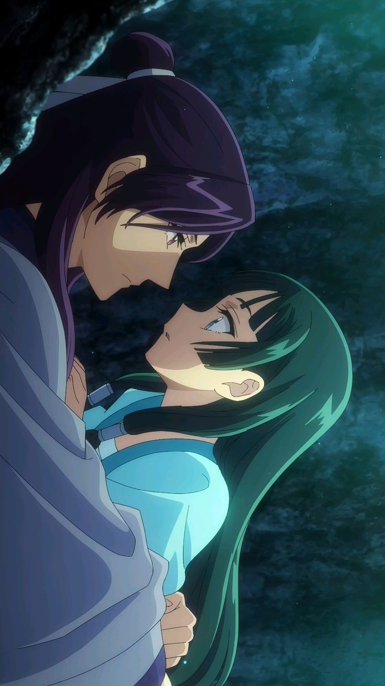
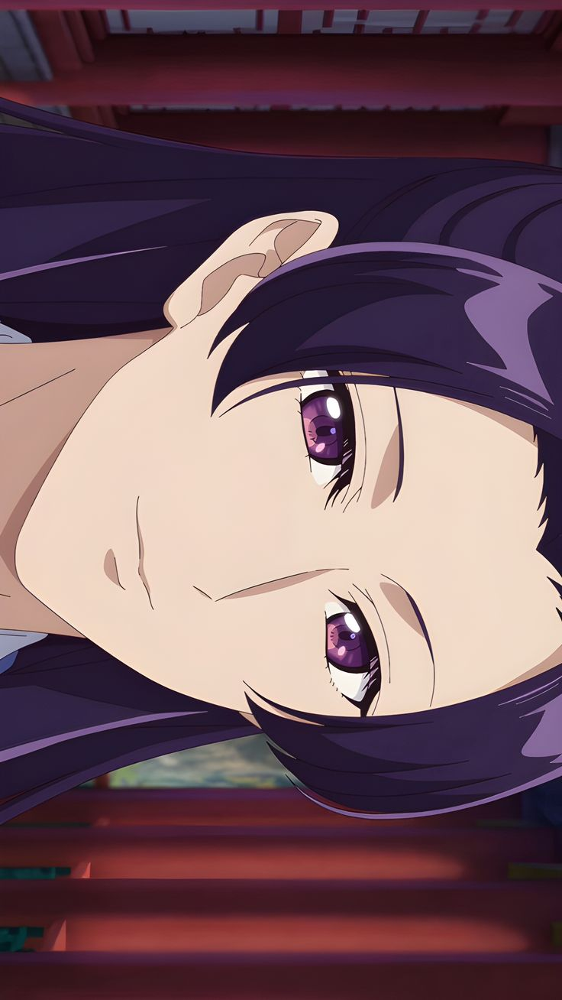
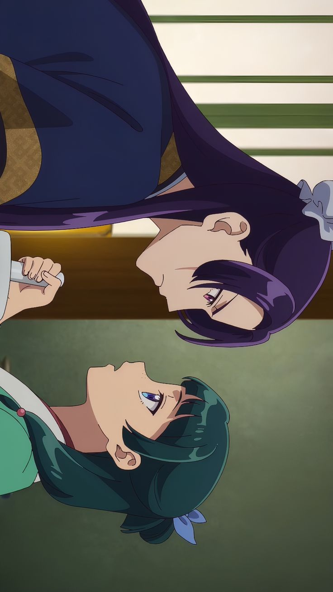
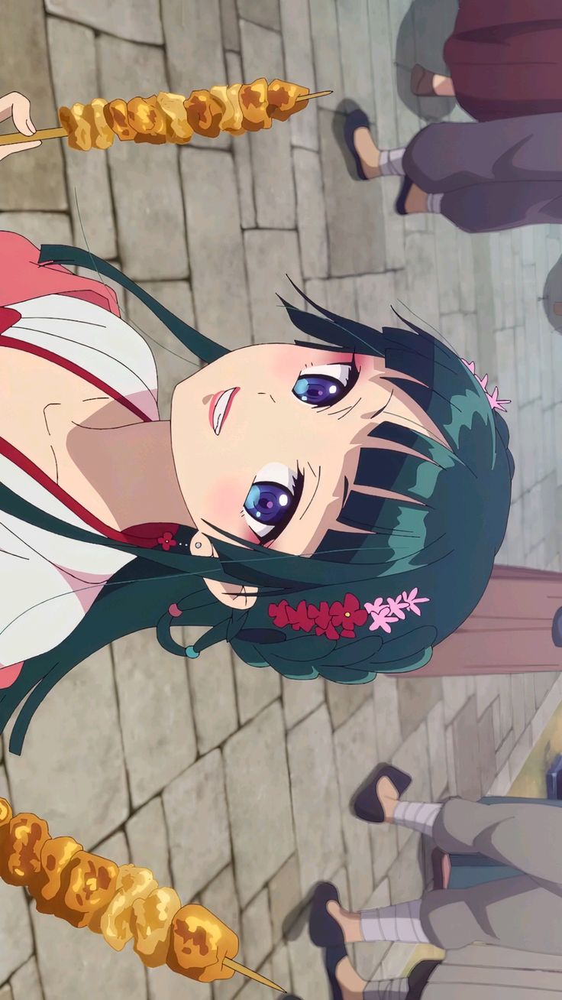
“Curiosity can kill you, but ignorance can be just as dangerous.”
Anime Studio: OLM, TOHO animation
Director: Norihiro Naganuma
Rating: ★ 8.6 / 10
Status: Ongoing
Source: Light Novel
Release Date: Oct 22, 2023
Episodes: 24+ Episodes
Seasons: 2 Seasons
Country: Japan
Language: Japanese
Music by: Kevin Penkin, Alisa Okehazama
Original Author: Natsu Hyūga